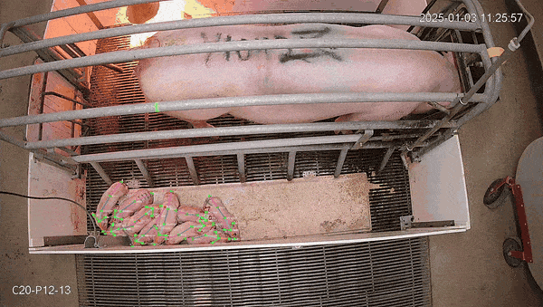

Piglet Keypoint Detection System
MMPose-based 7-keypoint pose estimation for livestock behavior research
Watch

MMPose model detecting all 7 anatomical keypoints (snout, head, ears, shoulder, back, tail) live on piglets in varied conditions.
Why
Livestock behavioral research depends on reliable pose tracking — but off-the-shelf models are trained on humans, not piglets. This pipeline trains a 7-keypoint MMPose model from scratch on 1,100+ hand-annotated images using MSU's GPU cluster, producing a model purpose-built for piglet body language analysis.
The bigger goal: remove the manual bottleneck from HPC-based deep learning. Environment setup on shared clusters is brittle, COCO format conversion is tedious, and SLURM config is opaque. This project automates all of it into a reproducible, one-command workflow reusable for any future keypoint dataset in the lab.
Which
Model
- MMPose (OpenMMLab) framework
- 7 keypoints: snout, head, L/R ear, shoulder, back, tail
- Optical flow anchoring for occluded keypoints
- 1,100+ annotated images with augmentation
Pipeline
- Roboflow API → COCO JSON conversion
- Conda environment (pinned OpenMMLab stack)
- SLURM batch training on MSU HPCC A100s
- Confidence-based keypoint overlay visualization
Stack
- PyTorch · MMPose · MMEngine · MMCV
- OpenCV · NumPy · matplotlib
- Roboflow API · COCO format
- SLURM · CUDA · Conda · Bash · Git
Wrinkles
Occlusion in Group Settings
Challenge — Piglets overlap constantly, hiding keypoints mid-sequence.
Solution — Optical flow analysis anchors skeleton keypoints across frames, maintaining tracking through temporary occlusion.
HPC Environment Fragility
Challenge — MMPose's dependency chain breaks easily against HPCC's CUDA module versions.
Solution — Pinned a tested version matrix into a environment.yml — one-command setup for any HPCC account.
Lighting & Pose Diversity
Challenge — Variable pen lighting and piglet orientations introduced heavy appearance variance.
Solution — Curated images across conditions; augmented with rotation, brightness, and flip transforms at training time.